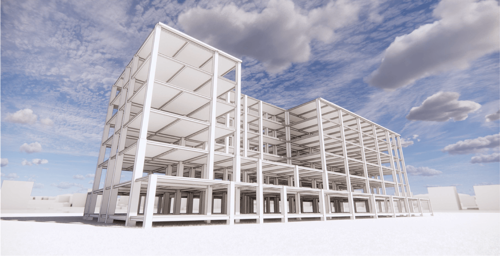

Have the courage to follow your heart and intuition. ——Steve Jobs
#Photographed at East Lake, Wuhan
"Experimental study on the mechanical properties of layered rock masses"
The layered structure is prevalent in the natural rock mass and is widely distributed in Sichuan and Tibet. This kind of structure could be an obstacle to engineering constructions and even cause serious accidents as it significantly influences the stability of the surrounding rock. Mastering the mechanical properties of a rock mass is basic in geotechnical engineering design and stability evaluation, so it is imperative to research the mechanical properties of the layered rock mass.We have cleverly designed and processed the rock samples to break down the multiple factors that affect the mechanical properties of the rock through controlled tests so that we can clearly characterise the relationship between structural and mechanical properties. On this basis, we introduced the structural mechanics principal structure model proposed by Professor Sun Guangzhong, derived the basic principle structure equations for laminated rocks and verified their applicability in engineering.
We tried to use computer vision combined with a high-speed camera to monitor the displacement of particular points on the surface of the specimen to reproduce the displacement field during the damage. However, due to the limited test equipment (only one high-speed camera in the laboratory), we could only obtain visual information on a single plane. We, therefore, could not correctly reproduce the accurate projection of the 3D displacement field on the surface of the specimen. Very unfortunate, but perhaps these ideas can be tried in my future research.
# This thesis was selected as an outstanding thesis of the School of Civil Engineering, Wuhan University
"Experimental study on the mechanical properties of layered rock masses"
The time for undergraduate thesis work was limited. Subsequently, with the help of Professor Lu and Wei Aichao senior, I further studied the specifications for writing academic papers and sorted out the ideas for the research. Finally, under the leadership of Professor Lu, we condensed the work done for my undergraduate thesis into a standard academic paper and introduced ideas such as continuum damage mechanics based on the original experimental data to provide a more in-depth analysis of the breakage characteristics and intercalation properties of the rock mass.
#This paper will be published (Under Review) in Chinese Journal of Rock Mechanics and Engineering (EI Compendex )
"Convolutional neural network-based recognition of character-based CAPTCHAs in the academic affairs management system of Wuhan University"
Under the guidance of Professor Shuguang Zhang, we produced a character-based CAPTCHA recognition model using CNN. We collected a large number of home page CAPTCHAs from Wuhan University's academic affairs system using python, processed them with greyscale and noise reduction, and then segmented the images with single characters. The model used two pooling layers and two convolutional layers. We trained our model with a large amount of annotated image data, and the final recognition accuracy of the model was over 91.4%. Wuhan University's original academic affairs system has been criticised by students for many years. After training this type of model, the verification code system of Wuhan University's academic affairs system was almost useless, prompting the university to finally develop a new academic affairs management system for students, which greatly facilitated their daily campus life.
Organized by China Civil Engineering Society
In this competition, I was the team leader representing Wuhan University. We spent two months completing the drawing design and modelling calculations using PKPM software and one month adjusting the structural rationality and economy of the whole building. The cross-sectional dimensions of the I-beams at each floor were repeatedly adjusted to achieve the optimum stress ratio. The wind loads and wind vibration coefficients were also taken into account to ensure that the structure would meet the requirements of the competition.
Thanks to Professor Chi's guidance and the joint efforts and dedication of the whole team, we eventually developed a detailed structural design and rendered our structural model, and after a fierce competition, we won the second prize in the country and Professor Chi was awarded the Outstanding Supervisor.
In 2019, I was just a freshman at Wuhan University but I participated in the structural design competition of Wuhan University and won the second prize. As the jury professor said It was impossible for a freshman to win any prize in such a professional competition. But we made it, I was so excited at that time.
( To be updated )
created with
Website Builder Software .